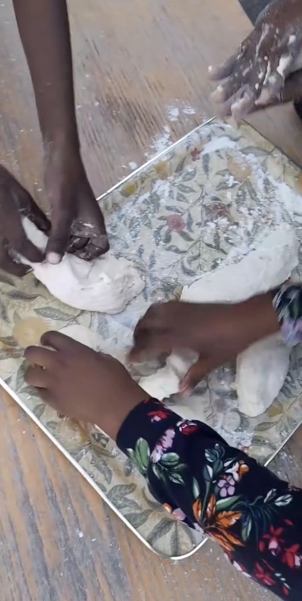
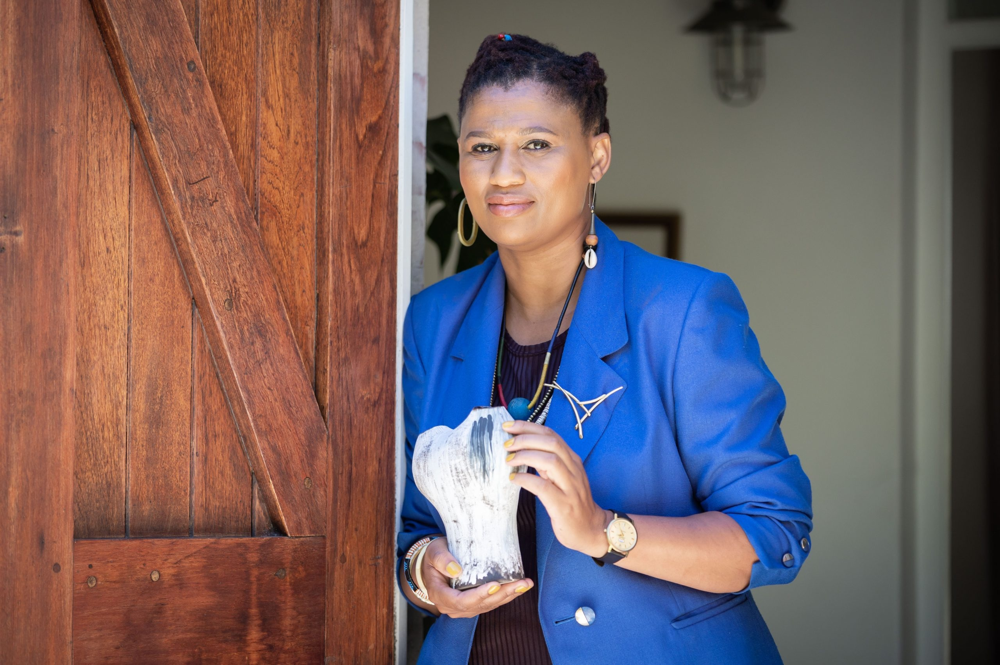
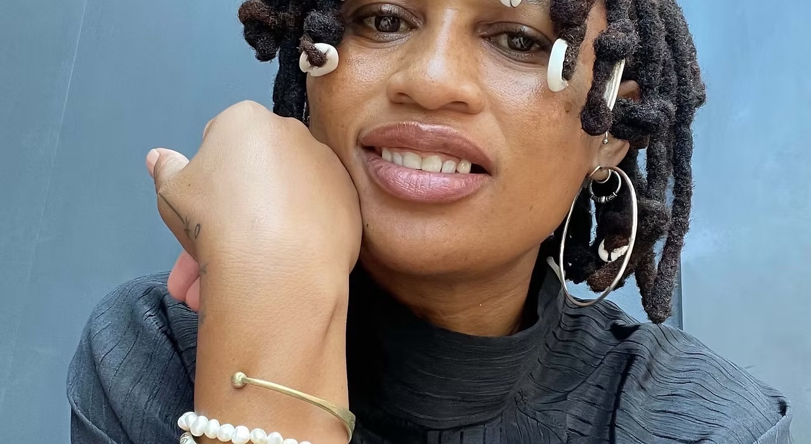

Creativity
Children are trusted to follow questions, try ideas and make discoveries in their own way.
About Us
Young Black Creatives gives children in Langa room to explore their ideas, learn with one another and take pride in what they can make.
Our purpose
We believe children thrive when they are treated with respect, given room to lead their learning and invited to care for a shared space.
Children are trusted to follow questions, try ideas and make discoveries in their own way.
Caring for clay, soil, tools and shared spaces helps children see themselves as part of a living community.
Through stories, language, song and making, children share knowledge, heritage and ways of seeing the world.
What we do
Through ceramics, gardening, drawing, painting, storytelling, theatre, song and dance, children experiment with materials and ideas around them.
Some sessions have a shared focus. Open studio time gives children space to choose what to do and discover where their ideas take them. Visiting artists and specialists share skills that children can then make their own.
Explore our activities
Our founder
The studio began with a simple invitation: come in, try the clay and see what you can make.
When Lungiswa rented a classroom in a local school for her ceramics studio, a few children nearby grew curious and started stopping by. She invited them in to play with clay and gave them room to experiment. Word spread, and a small class grew.
Today, 15 children attend the programme formally four days a week. Some also drop in on Mondays and Tuesdays to see Lungiswa. They call her “Mama” and love having a space of their own.
Lungiswa is a ceramic artist, costume designer and curator. What matters most here is the space she opened: a place where children are welcomed, trusted and encouraged to shape their own discoveries.


A conversation with the founder
Lungiswa shares how a ceramics studio became a welcoming place for children to make, learn and grow.
Help the space grow
Your money, useful materials, time and skills can help keep this welcoming creative space going.
Ways to supportContact Us
Ask what is most useful right now or share an idea for getting involved. Lungiswa will coordinate the details with you by email or phone.